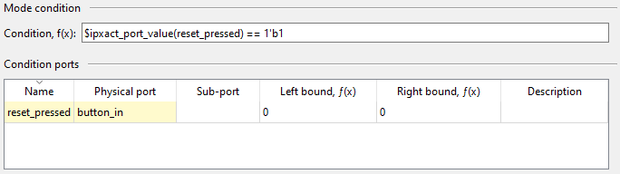

The mode editor can be used to edit the details of a component mode.
Name is a mandatory identifier for the mode.
Display name is an optional and used for a more user-friendly identifier.
Short description is an optional field for compact description of the mode.
Description is an optional field for textual description of the mode.
The condition defines when the mode is active. If the condition expression evaluates to true, the component is operating in the defined mode. The condition may depend on run-time value of a port, register field and other modes. The expression accepts the following special functions:
The condition ports can be referenced in the condition to check for their value in the mode.
Name is a mandatory identifier for the port reference.
Physical port is a mandatory and identifies the port in the component whose value may be checked in the condition.
Left and right bounds are optional for selecting a range of bits in the port. If no indices are defined, the whole port is selected.
Description is an optional field for textual description of the port.
The condition fields can be referenced in the condition to check for their bit pattern in the mode.
Name is a mandatory identifier for the field reference.
Field is a mandatory and identifies the field in the component whose bit pattern may be checked in the condition.
Leftmost bit and rightmost bit are optional for selecting a range of bits in the field. If no indices are defined, the whole field is selected.
Description is an optional field for textual description of the port.
EXAMPLE. The mode named reset is active when the value of the bit 0 in the physical port
button_in i.e. button_in[0:0] is equal to 1.
